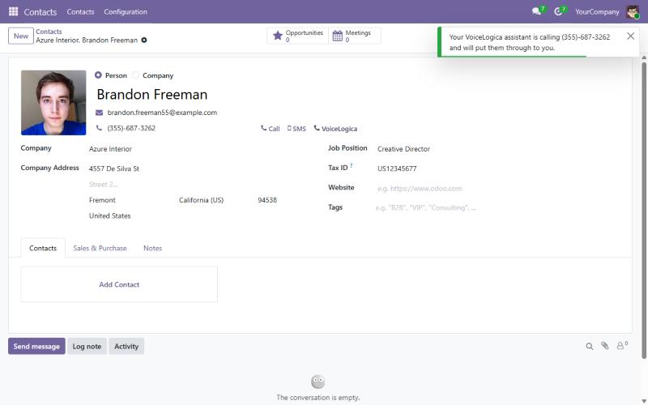
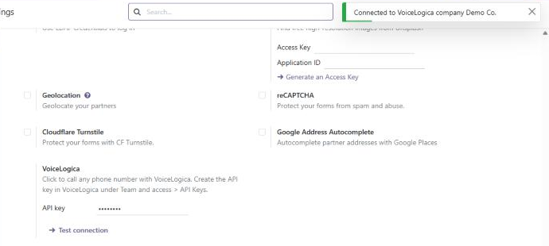

Call any phone number in Odoo with one click. VoiceLogica rings your phone and dials the customer, or its AI assistant calls them, says why you are calling and puts them through to you.

A VoiceLogica call button appears next to phone numbers on contacts, leads, companies and every other record with a phone field.
Each user's VoiceLogica profile decides how the call is placed: their desk phone or mobile rings first, or the AI assistant calls and connects them.
When your VoiceLogica AI agent is connected to Odoo, it can write a summary of the calls it handles into the customer's chatter.

Nothing is sent until an administrator enters the VoiceLogica API key. When a user clicks the call button, the module sends the phone number, the name of the record and the user's email (to find their VoiceLogica account) to VoiceLogica to place the call. No other Odoo data leaves your database through this module. The VoiceLogica privacy policy is at voicelogica.ai/en/legal/privacy-policy.
Write to support@voicelogica.ai.